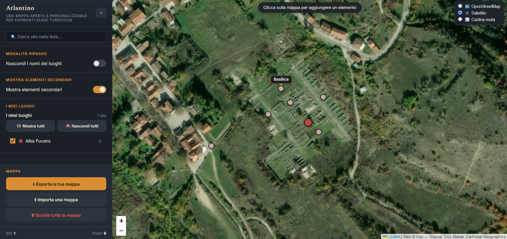
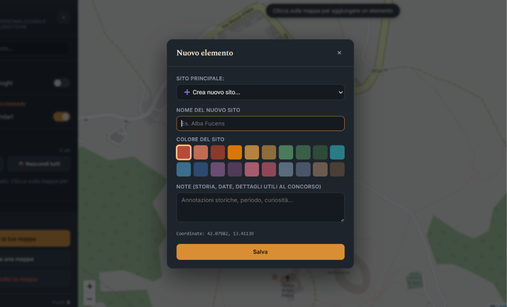
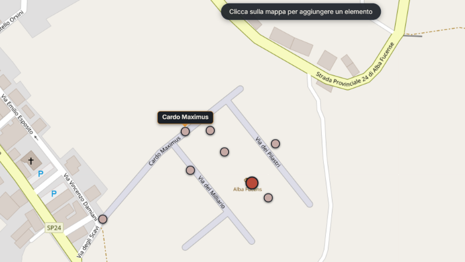

6 settembre 2026
Atlantino
Una mappa aperta e personalizzabile per aspiranti guide turistiche.
L'Atlantino è uno strumento pensato per lo studio, la memorizzazione e il ripasso dei siti e dei luoghi d'Italia previsti per l'esame di conseguimento dell’abilitazione all’esercizio della professione di guida turistica (2026). Per affiancare allo studio teorico anche uno cartografico, ho sviluppato questa web app come esperimento di vibe-coding con Claude Sonnet 5 (Anthropic), pensando a uno spazio di lavoro in cui visualizzare e personalizzare la propria mappa. È uno strumento aperto e libero che spero possa essere utile per i colleghi esaminandi e per chiunque voglia organizzare il proprio studio del territorio.
Come usarlo?
Non si tratta di una mappa pronta per l'uso, bensì di uno strumento con cui creare agilmente la tua mappa personale nella maniera che più si confà al tuo metodo e stile di studio, memorizzazione e ripasso. Si basa tutto sul principio della visualizzazione:
- sulla mappa piazzerai i tuoi segnaposto, a cui assegnerai nomi, colori ed eventuali note di testo;
- in qualsiasi momento potrai cambiare visuale tra cartina parlante, immagine satellitare e cartina muta.

Segnaposto
I segnaposto sono pallini di diversi colori con cui segnare i punti sulla mappa. Cliccando su un punto della mappa si aprirà una finestra che permette di personalizzare il segnaposto, dandogli un nome, un colore e inserendo dentro di esso eventuali note. Nomi, colori e note sono modificabili in qualsiasi momento anche dopo la loro creazione.
Tasto MODALITÀ RIPASSO: scorrendo il cursore sopra i segnaposto, comparirà il nome che gli avrai assegnato. Questa funzione è disattivabile e riattivabile con il tasto MODALITÀ RIPASSO.
Come funzionano i segnaposto: L'Atlantino organizza i punti geografici su due livelli:
- Principali... (i "siti"): Rappresentano i contenitori, cioè le macro-aree o macro-categorie (e.g. la città di Roma; la categoria "siti archeologici della Sicilia"). Hanno un colore identificativo.
- ... e secondari (i "punti di interesse"): Sono i singoli punti specifici legati a un sito principale (e.g. Ponte Vecchio nel contesto di Firenze; il teatro greco di Siracusa all'interno del Parco Archeologico della Neapolis). Ereditano il colore del loro sito "padre", di una tonalità più tenue ma riconoscibile.

Tasto ELEMENTI SECONDARIPuoi mostrare o nascondere interi siti dal menù laterale, oppure nascondere tutti quelli secondari (con il tasto SEGNAPOSTO SECONDARI) per testare la tua memoria.
Visuale
Puoi visualizzare tre tipi di mappa, cambiando dall'una all'altra in qualsiasi momento coi tasti in alto a destra senza spostamenti improvvisi:
- cartina parlante di OpenStreetMap, con toponomastica, strade, confini di stati e regioni. La lingua che si legge è quella ufficiale dello stato osservato, ma sono rispettati bilinguismi e certi nomi in lingua o dialetto locale. Consiglio, per esperienza personale, di servirsene nella fase di assegnazione dei segnaposto, possibilmente congiuntamente a un'altra mappa digitale o cartacea.
- immagine satellitare;
- cartina muta.

La visualizzazione dinamica e l'interattività delle mappe sono rese possibili dall'integrazione della libreria JavaScript Leaflet.
Filosofia del progetto e contributi
Non ho voluto creare una mappa e basta, ma una mappa personalizzabile da ciascuno in base alle proprie necessità per il proprio studio, giocando con pochi elementi minimi:
- la gerarchia tra segnaposto principali e secondari;
- la possibilità di includere le proprie note di testo;
- la condivisibilità dei file delle mappe.
IMPORTANTE: uso dei dati
I dati vengono salvati localmente nel browser. Se viene cancellata la cache e i dati non sono stati scaricati, essi andranno perduti. Puoi esportare la tua mappa come JSON e reimportarla in un secondo momento, su un altro browser. I file JSON esportati possono essere inviati anche ad altre persone. L'importazione di mappe o file JSON creati da terzi avviene sotto la diretta responsabilità dell'utente.
Licenza
Il codice è distribuito con licenza MIT.